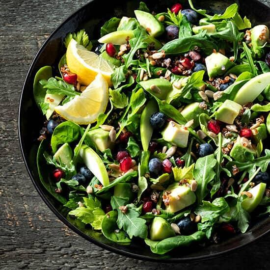
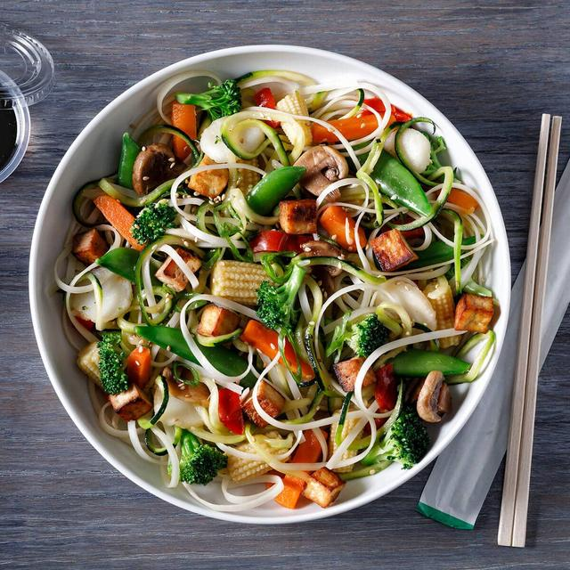
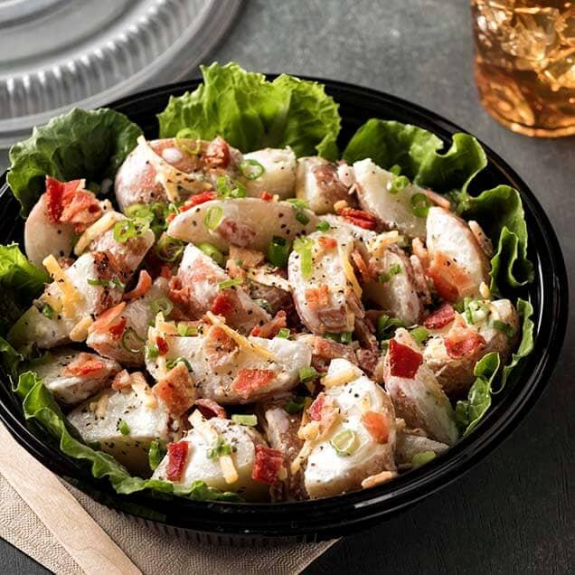
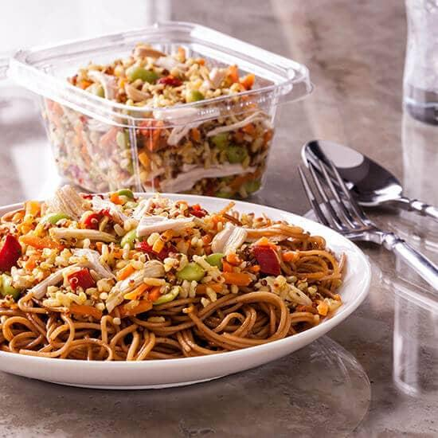
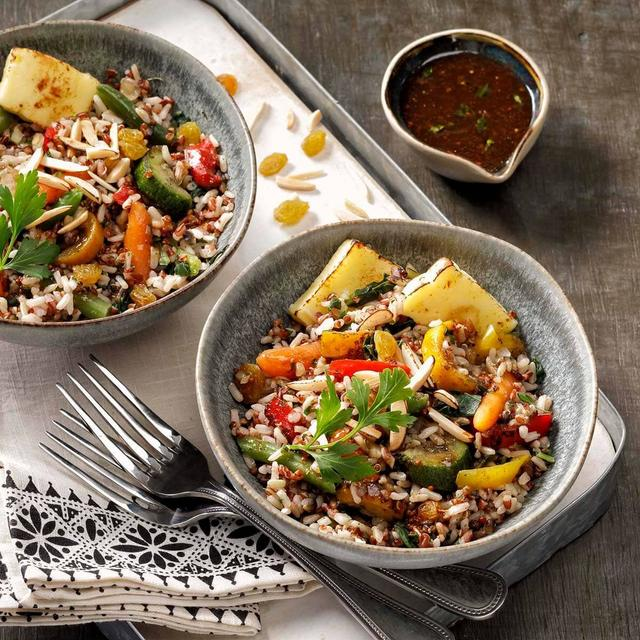
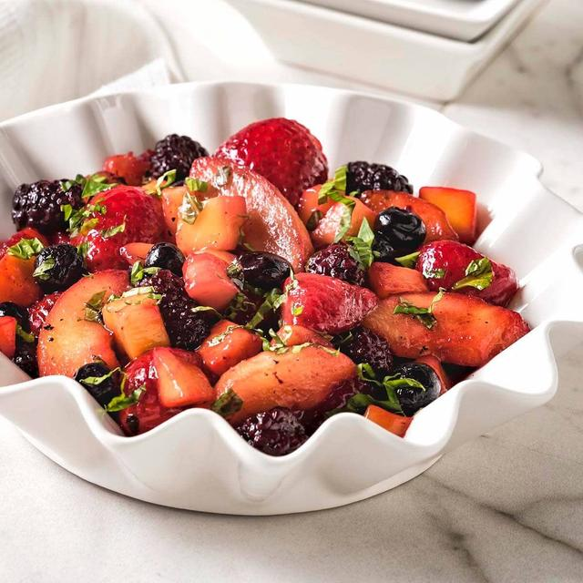
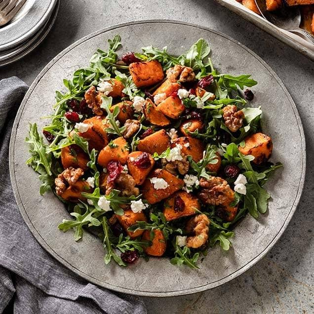
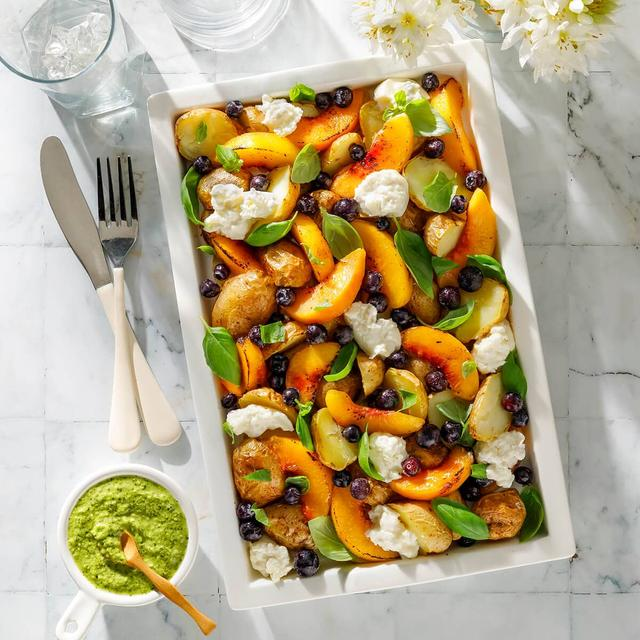
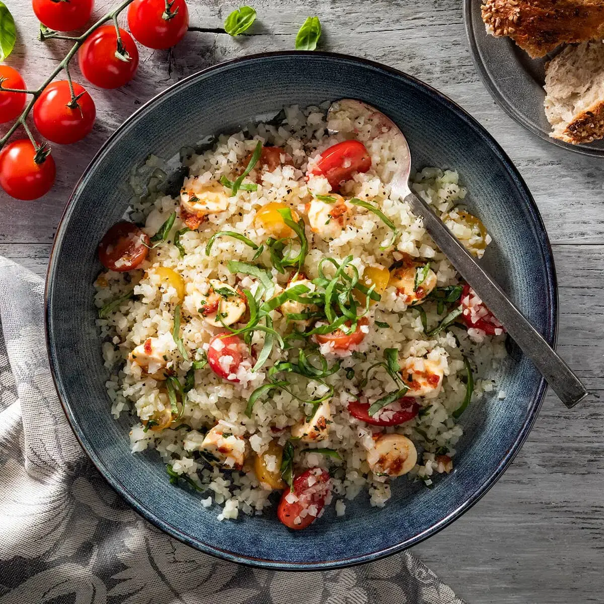
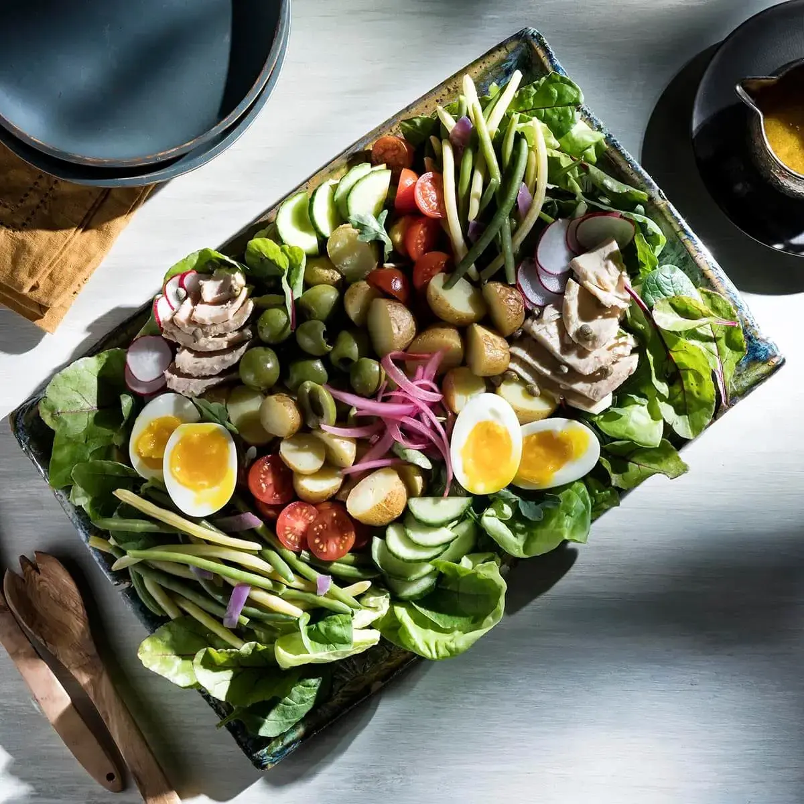

| Salad | Name & Description | Price | |
|---|---|---|---|
|  | Avocado, Spinach and Arugula Salad-------------------------------------------- A fresh and flavorful salad option; serve as a side or add some protein and serve it as an entrée |
12$ | |
|  | Chilled Stir Fry Noodle Salad-------------------------------------------- A refreshing (and filling) noodle salad that's packed full of colorful vegetables, crispy pan-fried tofu and tender rice noodles—all tossed together in a punchy sesame-soy vinaigrette |
14$ | |
|  | Loaded Redskin Potato Salad-------------------------------------------- Our precooked and precut red skin potatoes make your job easier without sacrificing quality. Full of familiar, loaded potato ingredients, this salad is sure to be a hit |
9$ | |
|  | Peanut Chicken Salad-------------------------------------------- Simple, satisfying and appealing on a plate or in your grab-n-go deli case |
19$ | |
|  | Roasted Mediterranean Salad-------------------------------------------- A satisfying salad packed with grains, roasted vegetables, halloumi cheese, and a little natural sweetness from golden raisins. Top it with house-made balsamic vinaigrette and you've got a perfect vegetarian entrée |
17$ | |
|  | Mixed Fruit with Lemon-Basil Dressing-------------------------------------------- This mixed fruit dish is light, bright, and bursting with all the flavors of summer. |
16$ | |
|  | Maple, Bacon, Sweet Potato and Arugula Salad-------------------------------------------- A hearty salad perfect for fall and winter menus. Offer it in a soup and salad combo as a satisfying lunch option, or size it up as an entrée salad with optional protein additions like grilled chicken or salmon. |
7$ | |
|  | Summer Potato and Peach Salad-------------------------------------------- This salad is completely—and deliciously—different than the mayonnaise-based version you've come to expect. Roasted baby potatoes and peaches, topped with burrata cheese and iced blueberry croutons |
12$ | |
|  | Marguerita Pizza Bowl-------------------------------------------- This bowl is packed full of flavor but it won't weigh you down with heavy ingredients. A base of riced cauliflower mixed with grape tomatoes, fresh mozzarella and basil tossed with a lemon-olive oil dressing |
16$ | |
|  | Deconstructed Nicoise Salad-------------------------------------------- Simple preparation (and a handful of ingredients you likely already have on hand) result in this satisfying entrée salad. Arrange it on a platter and serve it family-style |
16$ | |
| Salad | Name & Description | Price | |